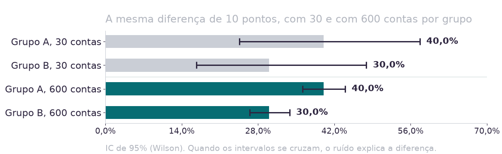
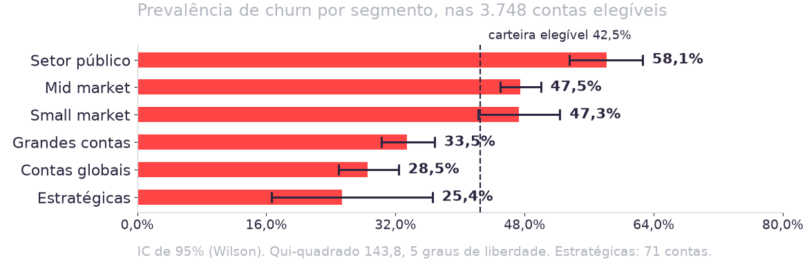
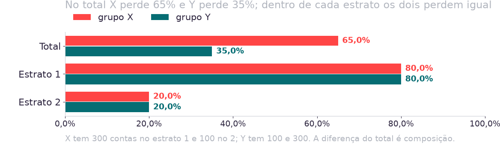
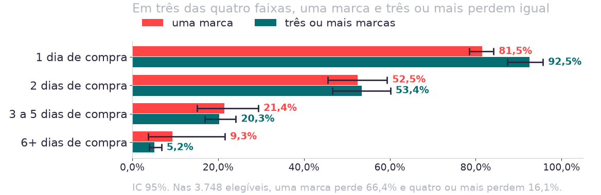
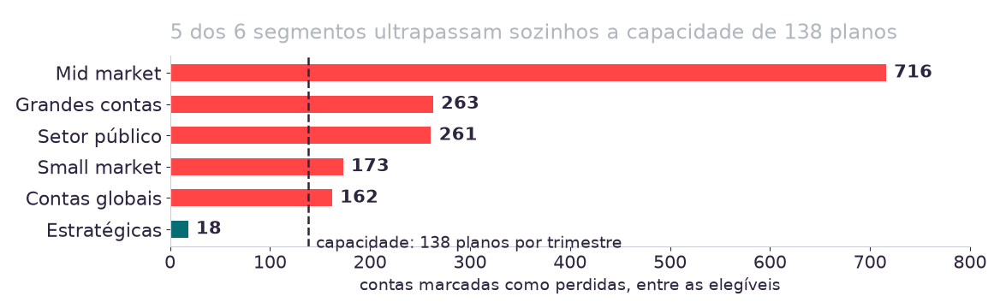
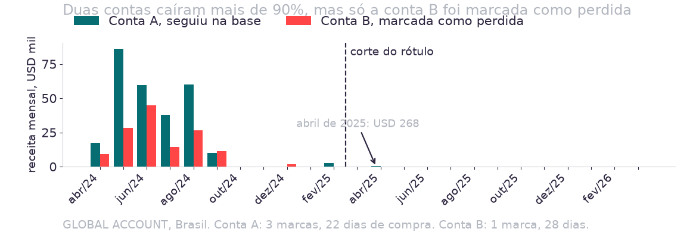

8.282
contas na carteira
1.593
marcadas como perdidas, 19,2%
13
meses de inatividade que o rótulo exige
24
meses que o painel cobre
Os dois últimos números juntos definem quem o rótulo alcança, e essa é a primeira pergunta de hoje.
Hoje fecham as três restantes: rótulo, visuais e limitações, e o artefato fica completo para 05/09.
Fonte: datasets_case_modulo2.xlsx; dados/analise_aula03.py.
| Critério | Conta A | Conta B |
|---|---|---|
| Segmento e país | GLOBAL ACCOUNT, Brasil | GLOBAL ACCOUNT, Brasil |
| Primeira compra | abril de 2024 | abril de 2024 |
| Receita no 1º semestre do painel | USD 270.790 | USD 134.697 |
| Receita no 2º semestre | USD 2.499 | USD 1.840 |
| Rótulo | seguiu na base | perdida |
A hipótese escrita antes do número é a única que pode perder, sem abrir a base.
Fonte: dados/analise_aula04.py, par_da_pbl.
| Item | O que vale hoje |
|---|---|
| Contrato | Nenhuma figura entra no artefato sem o teste que a sustenta escrito embaixo: intervalo, qui-quadrado ou estratificação, e a população. |
| Ambiente | Antigravity, sobre a pasta clonada, com duas skills novas em skills/. |
| Método | 13h00 às 14h20 e 14h40 às 14h55: três filtros para uma hipótese de causa, e a figura da sobrevivente. |
| Oficina | 14h55 às 15h45, seções 05, 06 e 07 do Artefato 1. Checkpoint às 15h30. |
| População | Contas | Perdidas | Prevalência |
|---|---|---|---|
| Carteira inteira | 8.282 | 1.593 | 19,2% |
| Primeira compra até 2025-02 (elegíveis) | 3.748 | 1.593 | 42,5% |
| Primeira compra de 2025-03 em diante | 4.534 | 0 | 0,0% |
O rótulo exige treze meses sem compra; quem entrou em março de 2025 teve no máximo doze meses de painel.
Toda hipótese de causa testada na carteira inteira mistura quem não perdeu com quem não teve tempo de perder. Hoje testamos nas 3.748 elegíveis.
Fonte: dados/analise_aula04.py, populacoes.
| Segmento | Contas | Prevalência | Receita | Dias | Marcas | Intervalo |
|---|---|---|---|---|---|---|
| Setor público | 449 | 58,1% | 42.388 | 3 | 3 | 18 |
| Mid market | 1.508 | 47,5% | 10.016 | 2 | 2 | 45,5 |
| Small market | 366 | 47,3% | 7.692 | 2 | 1 | 20 |
| Grandes contas | 786 | 33,5% | 36.926 | 4 | 3 | 24 |
| Contas globais | 568 | 28,5% | 56.294 | 4 | 3 | 16 |
| Estratégicas | 71 | 25,4% | 125.757 | 8 | 4 | 12 |
Setor público, com 3 dias e 3 marcas, perde 58,1%, mais que as estratégicas, com 8 dias, 4 marcas e 25,4%.
20
minutos
- Formato
- Em grupo, na pasta clonada
- Entrega
- perfil_por_segmento.csv em analises/, com a leitura escrita
- Checkpoint
- Cada mesa diz quantas contas ficaram fora e qual segmento compra menos vezes
A skill nova faz o corte de elegibilidade antes de medir.
Confira o primeiro resultado: a prevalência das não elegíveis precisa ser zero. Se não for, o critério do rótulo está errado na sua pasta.
Cinco medidas no grão da conta, de três abas diferentes.
Receita e marcas vêm de uma aba cada; dias de compra e intervalo vêm da aba de pedidos. A junção perde contas, e a skill pede o número.
A leitura escrita diz o que a tabela não mede.
Intervalo entre compras não existe para quem comprou em um único dia. Canal é constante. Engajamento cobre 1.560 contas elegíveis.
A mesa apresenta a tabela com as três populações e o perfil dos seis segmentos
Peça a elegibilidade.
Confira: 8.282 no total, e as duas partes somam isso.
Execute skills/perfil-por-segmento.md, Passo 1, sobre dados/datasets_case_modulo2.xlsx. Traga contas, perdidas e prevalência das três populações.
Peça o perfil.
Confira: o segmento com maior receita mediana tem mais dias de compra? Se a ordem não fizer sentido, peça o código e leia a junção.
Agora o Passo 2 e o Passo 3 da mesma skill: as cinco medidas por segmento, nas elegíveis, e quantas contas ficaram sem intervalo em cada segmento.
A tabela traz o tamanho da base em cada linha e a leitura de duas frases por segmento
| Pergunta | Ferramenta | O que ela devolve |
|---|---|---|
| Qual a faixa de valores compatível com esta proporção, dado o tamanho da base? | Intervalo de confiança de 95% (Wilson) | Um piso e um teto. Dois intervalos que se cruzam não sustentam diferença. |
| A distribuição do rótulo entre as categorias desta tabela poderia ser acaso? | Qui-quadrado de contingência | Uma estatística, os graus de liberdade e um p. Abaixo de 0,05, o acaso deixa de ser explicação confortável. |
O primeiro filtro de uma hipótese é o ruído: diferença que cabe no intervalo não vai para a figura.

O tamanho da base decide o que a prevalência consegue afirmar; sem base, ela é só adjetivo.

Qui-quadrado de 143,8 com 5 gl: segmento separa o rótulo do acaso.
Fonte: dados/analise_aula04.py, tabela_com_ic("segmento").
| Hipótese | Categoria | Contas | Prevalência | IC 95% | Qui-quadrado |
|---|---|---|---|---|---|
| Amplitude de mix | 1 marca | 1.086 | 66,4% | 63,5% a 69,1% | 615,4, 3 gl |
| 2 marcas | 915 | 51,5% | 48,2% a 54,7% | ||
| 3 marcas | 640 | 34,8% | 31,3% a 38,6% | ||
| 4 ou mais | 1.107 | 16,1% | 14,0% a 18,4% | ||
| Setor | GOVERNMENT | 310 | 59,7% | 54,1% a 65,0% | 93,9, 12 gl |
Mix e setor passam pelo filtro do ruído; canal é Insuficiente por construção, e engajamento por cobertura.
Fonte: dados/analise_aula04.py, tabela_com_ic.
20
minutos
- Formato
- Em grupo, na pasta clonada
- Entrega
- bivariada.md com a tabela, o intervalo, o qui-quadrado e o veredito
- Checkpoint
- Cada mesa lê o veredito e o intervalo da categoria mais extrema
Escolha uma hipótese que a mesa acredita e que pode perder.
Marcas, setor, região ou marca comprada. O critério de refutação vai escrito antes de rodar: qual resultado derruba a hipótese.
A skill de bivariada ganhou o Passo 1a, e ele roda primeiro.
Se o agente testar na carteira inteira, a prevalência de 19,2% aparece na tabela. É o sinal de que o corte não foi feito.
Veredito em uma de três palavras.
Confirmada, Contraditada ou Insuficiente, como no caderno da Aula 01. Categoria com menos de 30 contas entra marcada.
A mesa enuncia o veredito e mostra o intervalo da categoria que o sustenta
Peça a tabela com intervalo.
Confira: a soma das contas bate com 3.748? Categoria abaixo de 30 contas marcada?
Execute skills/bivariada.md, Passos 1a e 2, cruzando churn_label com [sua variável] nas contas elegíveis. Inclua o intervalo de confiança de 95% (Wilson) de cada categoria.
Peça o qui-quadrado e o veredito.
Confira: o veredito cita o intervalo, e não só o p? Um p pequeno com intervalos que se cruzam nas categorias que importam pede cautela.
Calcule o qui-quadrado de contingência desta tabela, com graus de liberdade e p. Depois escreva o veredito contra o critério de refutação que eu escrevi.
O bivariada.md traz tabela, intervalo, qui-quadrado e o veredito com o critério escrito antes

O segundo filtro é o confundidor: uma associação que some dentro dos estratos era composição, e a variável era proxy do fator de estratificação.
| Segmento | 1 marca | Prevalência | 3 ou mais | Prevalência |
|---|---|---|---|---|
| Contas globais | 133 | 63,2% | 307 | 11,4% |
| Grandes contas | 196 | 66,8% | 413 | 14,3% |
| Mid market | 466 | 67,4% | 601 | 25,1% |
| Setor público | 83 | 84,3% | 273 | 46,9% |
| Small market | 192 | 57,3% | 105 | 22,9% |
Controlada por segmento, a hipótese do mix sobrevive, mas falta o fator que o perfil de compra apontou.
Fonte: dados/analise_aula04.py, estratificar("marcas", 1, 3, "segmento").

Em três das quatro faixas os intervalos se cruzam: 2 dias, 52,5% contra 53,4%; 3 a 5, 21,4% contra 20,3%; 6+, 9,3% contra 5,2%. Na de 1 dia a relação inverte: 81,5% contra 92,5%.
| Segmento (elegíveis) | Brasil | Prevalência | Outros países | Prevalência |
|---|---|---|---|---|
| Contas globais | 161 | 18,6% | 407 | 32,4% |
| Grandes contas | 381 | 31,2% | 405 | 35,6% |
| Mid market | 1.168 | 48,2% | 340 | 45,0% |
| Setor público | 346 | 60,1% | 103 | 51,5% |
| Small market | 73 | 72,6% | 293 | 41,0% |
A diferença entre países é composição de segmentos, e ela inverte dentro das contas globais.
Fonte: dados/analise_aula04.py, estratificar("regiao", "BR", "outros", "segmento") e composicao_br.
| Dias de compra | Contas | Prevalência |
|---|---|---|
| 1 | 1.194 | 85,4% |
| 2 | 620 | 52,3% |
| 3 a 5 | 861 | 22,0% |
| 6 ou mais | 1.073 | 5,6% |
Uma conta com um único dia de compra, em 2024, já está a treze meses ou mais sem comprar: a variável conta o desfecho.
O terceiro filtro é o vazamento: a variável foi construída com a informação que define o rótulo.
Fonte: dados/analise_aula04.py, tabela_com_ic("faixa_dias").
Uma marca perde 66,4% e quatro ou mais perdem 16,1%, com intervalos que não se cruzam. O diretor comercial propõe uma campanha de venda cruzada para reter. O que você diz?
- 1 marca
- 66,4%
- 4 ou mais
- 16,1%
- Sob controle por frequência
- cruzam
| Pergunta | Forma | O que vai junto |
|---|---|---|
| Como a variável se distribui? | Histograma | Escala log se assimetria > 3 |
| Onde está a maioria por grupo? | Boxplot | Escala e base iguais |
| Duas variáveis andam juntas? | Scatterplot | Nº de pontos e alternativa |
| Proporção difere por categoria? | Barras com IC | Intervalo e qui-quadrado |
| Duas contas divergem no tempo? | Séries | Eixo e corte marcados |
Figura sem teste embaixo é ilustração; com o teste, ela sustenta uma decisão.

Mid market 716; grandes contas 263; setor público 261; small market 173; contas globais 162.
Fonte: dados/analise_aula04.py, fila_por_segmento.

Conta A voltou a comprar em 2025; Conta B parou em 2024.
15
minutos
- Formato
- Em grupo, na pasta clonada
- Entrega
- Uma figura em figuras/ e a entrada dela em visuais.md
- Checkpoint
- Cada mesa projeta a figura e lê o título e a linha de teste
Reestratifique a hipótese da Prática 2 por um segundo fator.
Se ela desaparecer, a figura é a da estratificação, e o título diz isso.
Execute skills/bivariada.md, Passo 4a, sobre a hipótese que testei, estratificando por faixa de dias de compra. Diga se ela sobrevive, desaparece ou inverte.
Produza a figura com a skill nova.
Confira: o título tem número? A linha embaixo diz a população e o teste?
Execute skills/figura-que-decide.md sobre o resultado: escolha a forma pela pergunta, escreva o título como conclusão com o número, desenhe o intervalo e escreva o teste embaixo.
A figura tem título com número, intervalo desenhado e o teste escrito embaixo
50
minutos
- Formato
- Em grupo, três estações de tempo marcado
- Entrega
- A pasta do grupo com as sete seções reexecutáveis
- Checkpoint
- Checkpoint às 15h30: cada mesa mostra a seção mais atrasada
Estação 1, 15 minutos: rótulo (seção 05).
O critério recuperado na Aula 03, mais a população que ele consegue marcar e a contagem das 4.534 que ficam fora. Três cortes alternativos com o tamanho da fila.
Estação 2, 20 minutos: visuais (seção 06).
Uma figura por segmento da segmentação do grupo, com o teste escrito embaixo. É o insumo que a manhã do Prof. Donaire pede.
Estação 3, 15 minutos: limitações (seção 07).
A causa que o dado observacional não fecha, dita com a associação que sobreviveu. O que a base não responde e o dado que faltaria.
Outra pessoa clona a pasta, coloca o dataset em dados/ e obtém as mesmas figuras
29/08 · hoje
Fica pronto
Rótulo, visuais e limitações, e três filtros para qualquer hipótese de causa.
Trilha de Negócios
Segmentação e personas
As figuras da seção 06, com intervalo e teste embaixo, sustentam o mapa valor contra risco da manhã.
05/09 · Semana 5
Artefato 1 e veredito de alvo
Entrega binária com feedback cruzado, e o fechamento da recomendação de alvo com número.
12/09 · Aula 06
Feature engineering
Recência, frequência e valor, sobre a população elegível, e o vazamento temporal que a frequência de hoje antecipou.
4.534 contas não têm como estar marcadas pelo rótulo entregue. Esse número é metade do argumento do veredito de alvo.
Caso e dados
1. Kovan Technologies LATAM: A Definição do Alvo. Business case PL-02-2026, versão v2.
2. datasets_case_modulo2.xlsx, base oficial recebida em 21/08/2026. Não distribuída por este acervo.
Métodos citáveis
3. Wilson, E. B. Probable inference. JASA, 1927.
4. Pearson, K. On the criterion. Phil. Magazine, 1900.
5. Simpson, E. H. Interaction in Contingency Tables. JRSS B, 1951.
6. Kaufman, S. et al. Leakage in Data Mining. ACM TKDD, 2012.
O que é nosso
Os três filtros de causa, o critério de elegibilidade e as duas skills de agente, organizados para este módulo.
Todo número desta aula está travado em dados/tests/test_aula04_numeros.py.